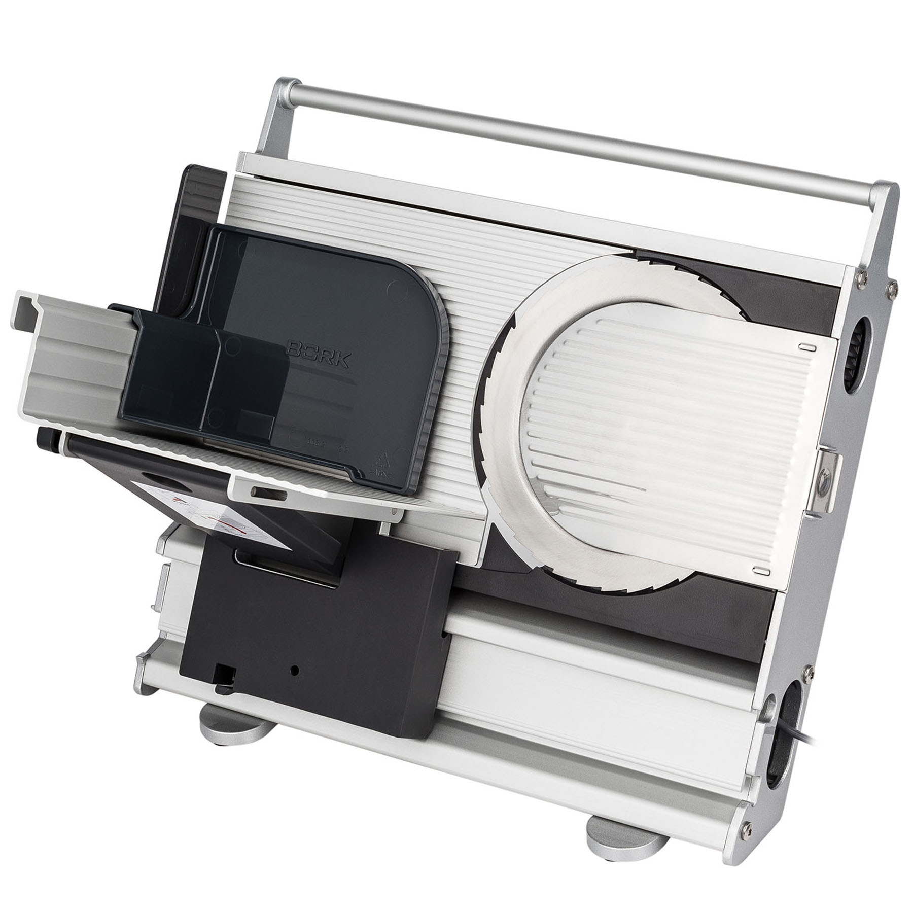
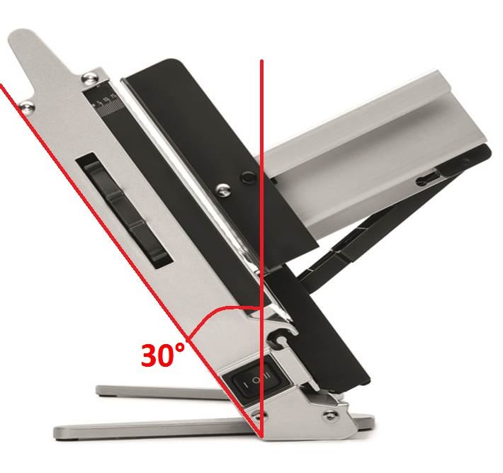
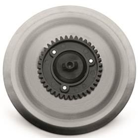
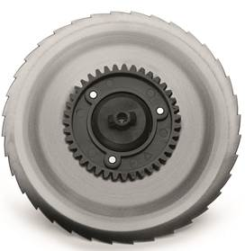
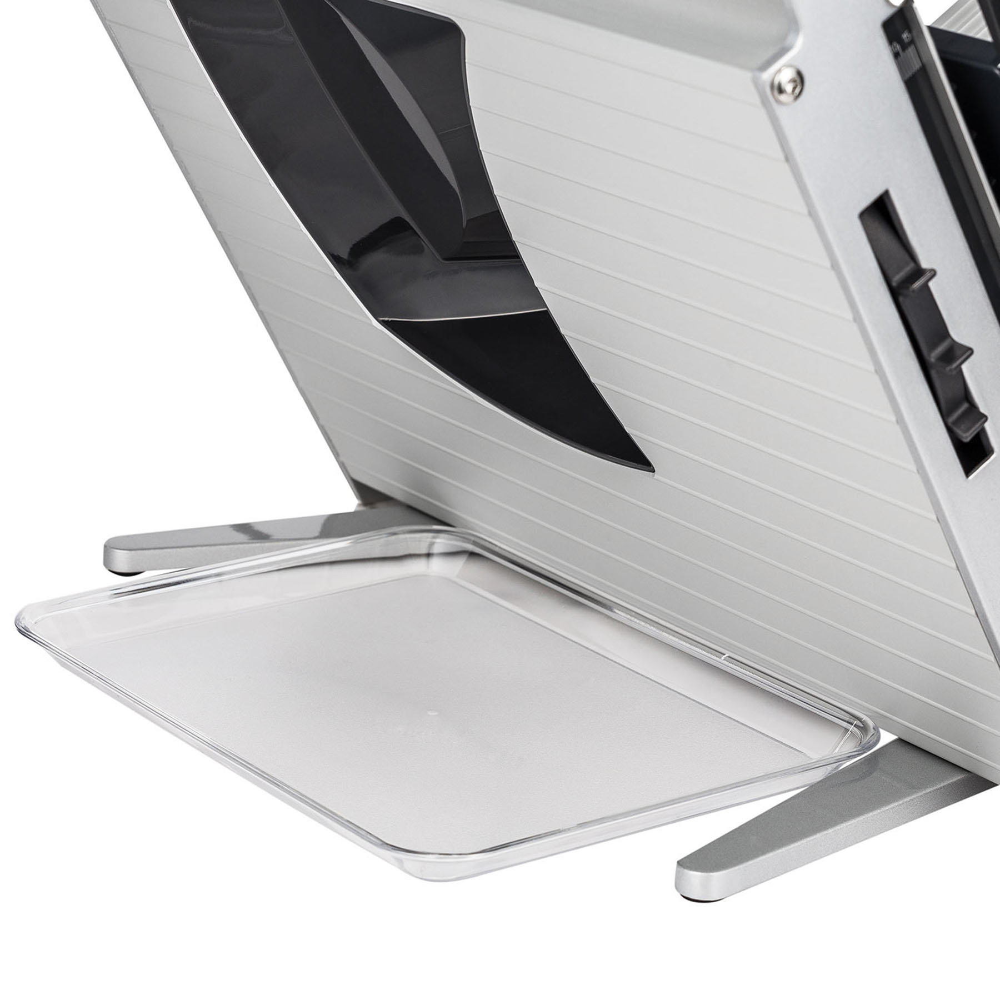
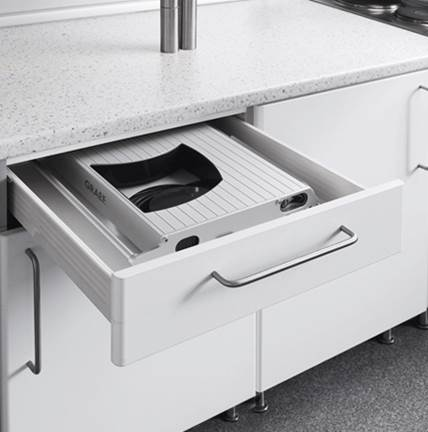
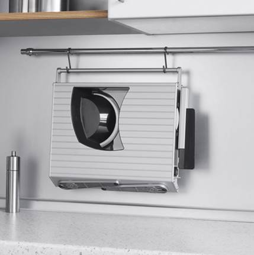
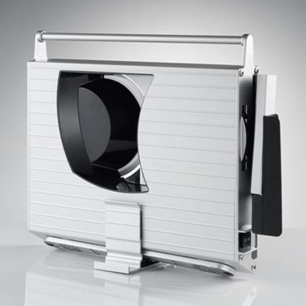
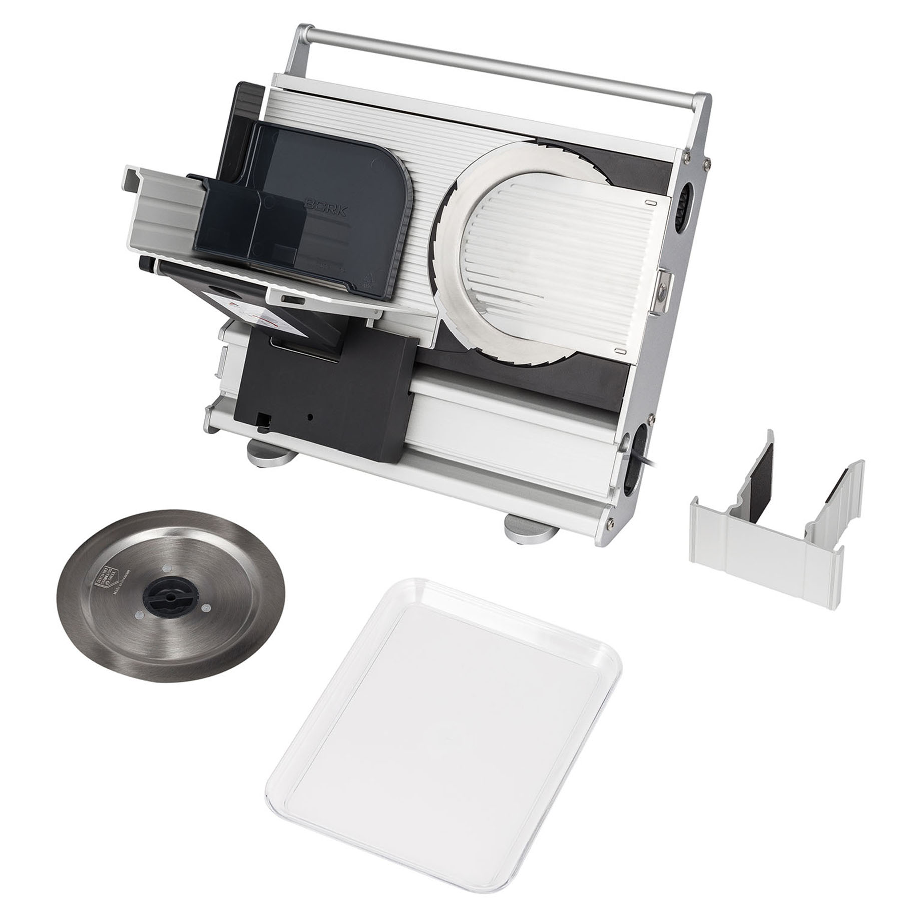

Ломтерезка BORK Z780
Функция "Easy Cut"
Наклон ломтерезки облегчает нарезку плотных и небольших по размеру продуктов. Сила земного притяжения, позволяет сильно прижимать продукт к режущему узлу, что существенно облегчает нарезку и повышает ее качество.
Для продления срока службы ножей необходимо смазывать шестеренки и скользящее кольцо вазелином либо подобной смазкой после каждой чистки.
 Внимание на это обращается не с проста! Многие пользователи думая, что смазка заложена для транспортировки, при промывке устройства удаляют её. Это крайне нежелательно и может негативно отразиться на сроке службы ломтерезки.
Широкое пространство под режущим блоком
Пространство под режущим блоком достаточно велико, чтобы расположить там посуду, для нарезаемого продукта (тарелки, подносы, сервировочные блюда и т.п.). Это также облегчает очистку прибора.
Запустите ломтерезку на постоянную работу и приготовьте тарелку с нарезкой для гостей, не отвлекаясь на нажатие кнопки. Для приготовления одного сэндвича воспользуйтесь кратковременным режимом работы, это обеспечит безопасность использования устройства. (Отпустите кнопку лезвие остановится.)
Легкосъёмное крепление ножа и защитный щиток
Легкосъемное крепление ножа позволяет снять его просто, быстро и, прежде всего, безопасно.
Защитный щиток ножа выполнен как продолжение ограничителя и имеет аналогичную волнообразную поверхность, которая существенно облегчает нарезку и повышает ее качество.
Ножи ломтерезки BORK Z780 диаметром Ø 170 мм изготовлены в Германии из нержавеющей стали в г. Золинген.
В настоящее время доступны два типа ножей: гладкая заточка и серрейторы (с "зубчатым" краями).
Гладкая заточка наиболее эффективна для тонкой нарезки, а серрейторы – для нарезки хлеба, сыра, колбас и других продуктов «с корочкой». Данная ломтерезка разработана и изготовлена на заводе в Германии, который является лидером в производстве профессиональных ломтерезок.
Это гарантирует высокое качество, надежность и долгие годы службы прибора.
  Аргументы для продажи Z780
- Регулировка толщины ломтика гарантирует ровные ломтики из любых продуктов.
- Функция "Easy Cut" позволяет Вам легко и удобно резать продукт.
- Широкое пространство под режущим блоком позволяет использовать большую посуду для продуктов.
- Постоянная работа ломтерезки дает возможность быстро и комфортно нарезать большое количество продукта.
- Импульсная работа ломтерезки обеспечивает быструю и безопасную нарезку небольшого количества продукта.
- Защитный щиток для ножа. Продукт не вылетает при работе.
- Легкосъёмное крепление ножа обеспечивает безопасность при работе. Тяжело порезаться, легко мыть.
- Ломтерезка складывается в три этапа. Это дает удобство при хранении.
- Два типа ножей обеспечивает широкий спектр продуктов для резки.
Комплектация и технические характеристики

Ломтерезка: 1 шт.
Держатель продукта: 1 шт.
Лоток для нарезанного продукта: 1 шт.
Гладкий нож: 1 шт.
Зубчатый нож: 1 шт.
Напряжение: 230 В
Частота: 50 Гц
мощность: 45–170 Вт
Габариты (В×Ш×Г): 430 × 350 × 80 мм
Вес: 4,46 кг
Сделано в Германии